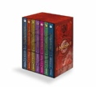

ISBN: 9783865060624
ListPrice: EUR 69,00
Ausgabe: 1
Maße: 4.30 x 7.80 x 5.00 in
Wertung: 4.0 (70 Stimmen)
Hinzugefügt am: 21.01.2010
Zusammenfassung: Der Fantasyzyklus "Die Chroniken von Narnia" des englischen Literaturprofessors Clive Staples Lewis gehört längst zu den großen Klassikern des englischen Kinderbuchs. Als Lewis 1950 den Roman "Der König von Narnia" verfasste, legte er damit den Grundstein für die Legende des magischen Landes Narnia, dem er in den folgenden Jahren weitere sechs Bände widmen sollte. "Die Chroniken" erzählen die Abenteuer der vier Geschwister Peter, Susan, Edmund und Lucy, die über einen alten Wandschrank im Haus des betagten Professors Digory Kirke in eine andere Welt gelangen, in der Tiere sprechen können und die wundersamsten Dinge geschehen.
Die vorliegende Gesamtausgabe der "Chroniken" versammelt alle sieben Romane von Lewis‘ Zyklus in einem Band. In der chronologischen Reihenfolge ist "Der König von Narnia" der zweite Band, während die anderen sechs Romane von der Entstehungsgeschichte Narnias und weiteren Abenteuern der vier Geschwister berichten. Der großformatige Sammelband zeichnet sich durch zahlreiche farbige Illustrationen und eine äußerst liebevolle Gestaltung aus. -- Ob zum selber Lesen oder Verschenken, "Die Chroniken von Narnia" ist ein wunderschöner Schmöker für lange Winterabende! "--Sara Schade"
Themen
Englische Belletristik, Roman, Erzählung, TB/Belletristik/Fantasy, Belletristik, Belletristik / Romane / Erzählungen, Erzählungen, Romane, Fantasy, Kinofilm


 Updated: 27.12.2022 | Total number of titles: 201 | Page: 10 of 17
Updated: 27.12.2022 | Total number of titles: 201 | Page: 10 of 17